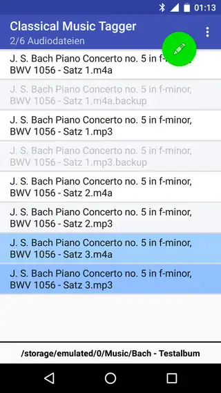
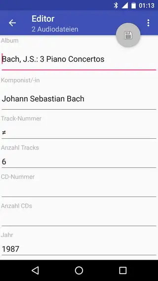

Classical Music Tagger
صوت وفيديو وموسيقى
While most Android applications do not even know about composers, this one additionally handles works, movements, conductors etc. This application is designed as auxiliary tool for the Unpopular Music Player and the Opus 1 Music Player, but alternatively also runs in a standalone mode showing a file
✓ ترخيص مفتوح (GPL-3.0-only) · آخر تحديث: 2025-09-23
1.11الإصدار
2.8 MBالحجم
GPL-3.0-onlyالرخصة
Open in Kanzتحميل APK (2.8 MB)
Download APK
SHA-256: 18e0165743740d0db6fa222dd41259f31879e53b6d0eb2830d1171c0386c1348


تطبيقات تانية لنفس المطوّر (6)
More apps from this developer: de.kromke
امسح الكود لفتح صفحة التطبيق
Scan to open this app page
لو كنز مش متثبت عندك: نزّل متجر كنز.
Not installed? Get the Kanz store.